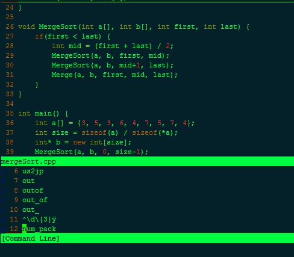

Vim 在编辑器中是神一样的存在，熟练掌握Vim将极大提高编辑文本的效率。本文将介绍Vim最基本的操作和技巧。
操作篇
模式
Vim中一共有4种模式：
- 普通模式：启动Vim后，为普通模式，所有键都为功能键。
- 插入模式：按下键i，进入插入模式，此时可以输入文本，返回普通模式，按Esc键。
- 可视模式：按下键v，进入可视模式，可以移动光标对文本进行选择
- 命令行模式：输入":"进入命令行模式，运行Vim的命令
最基本的移动
将光标上下左右移动，分别对应kjhl四个键。可以在前面加数字代表移动多个单位。如10j下移10行。
在文件中的移动
G-----移动到最后一行
gg ------ 移动到第一行
10G ------ 跳到第10行
75% ----- 跳转到全文75%的地方
移动到指定字符
使用f,t,F,T可以再当前行快速移动。
fx ----- 移动到光标右边的第一个’x'字符上
Fx ----- 反方向查找，也就是移动到光标左边的指定字符上。
tx ----- 移动到光标右边的第一个’x'字符之前
Tx ----- 它移动到光标右边的指定字符'x'之后。
; ----- 重复前一次输入的f, t, F, T命令
, ----- 反方向重复前一次输入的f, t, F,T命令。
";"和","这两个命令前也可以使用数字来表示倍数。也可以在命令前面使用数字，表示倍数。例如： 3fx ----- 移动到光标右边的第3个’x'字符上。
移动到行首行尾
0 ------ 移动到行首
$ ------ 移动到行尾
^ -------移动到第一个非空白字符行首
按单词移动
w ------ 移动光标的下一个单词的词首
b ------ 移动光标的上一个单词的词首
e ------ 移动光标的下一个单词的词尾
ge ------ 移动光标的上一个单词的词尾
按窗口移动
H ------ 让光标跳到当前窗口的顶部 M ------ 让光标跳到当前窗口的中部 L ------ 让光标跳到当前窗口的底部
相对于光标滚屏
zt ------ 把光标所在行移动窗口的顶端 zz ------ 把光标所在行移动窗口的中间 zb ------ 把光标所在行移动窗口的底部
各种插入
i ------ 在光标处插入 a ------ 在光标后插入 o ------ 在当前行后插入一个新行 O ------ 在当前行前插入一个新行 cw ------ 替换从光标所在位置后到一个单词结尾的字符（c键和w键）
复制和粘贴
yy ------ 拷贝当前行 p ------ 粘贴 也可以在yy和p的前面加上数字： 3yy ------ 拷贝当前行起的3行 3p ------ 粘贴文本3次
查找
在normal模式下进行查找。 / ------ 在Normal模式下输入”/“，然后输入你想查询的字符串，回车，就跳转到第一个匹配的地方了。 ? ------ 与/相反的方向查找 n ------ 重复上一次的查找命令 N ------ 按相反方向重复上一次的查找命令
在输入”/“或”?“后，用上、下光标键(或CTRL-P/CTRL-N)翻看历史记录，然后再次执行这个查找。 你还可以使用”q/“和”q?“命令，在vim窗口最下面打开一个新的窗口，这个窗口会列出你的查找历史记录，你可以使用任何vim编辑命令对此窗口的内容进行编辑，然后再按回车，就会对光标所在的行的内容进行查找。如下图所示： 
* ------ 查找光标所在位置的单词，所有匹配的单词将高亮显示，并跳到下一个匹配项上 # ------ 查找光标所在位置的单词，所有匹配的单词将高亮显示，并跳到上一个匹配项上
% ------ 括号匹配移动，即移动到与当前光标所在括号匹配的括号的位置
替换字符串
%s/源字符串/目的字符串/g ------ 将当前文档中所有的源字符串替换为目的字符串
删除、撤销和重做
dd ------ 删除当前行 dt ------ 删除当前行直到遇到它后面跟的符号 u ------ 撤销上一次操作 ctrl + r ------ redo重做 如我用dd删除了当前行，如果后悔了不想删除可以使用u命令撤销，如果还是想删除可以使用ctrl + r继续删除。
打开、保存和退出
以下操作除非特别说明都在命令模式下操作，即每个命令前都要加入":"，如:q退出。 q ------ 退出当前文件 q! ------ 强制退出当前文件，不保存 w ------ 写入文件，存盘 wq ------ 保存退出当前文件 x ------ 保存退出当前文件 ZZ ------ 保存退出当前文件（普通模式下运行） e filepath ------ 打开一个文件 saveas filepath ------ 另存为 bn ------ 当同时打开很多文件后，可以使用bn切换下一个文件。 bp ------ 当同时打开很多文件后，可以使用bp切换上一个文件。
重复命令
. ------ 重复上一次离开插入模式之前的全部命令 n< command > ------ 之前提到过的重复command命令n次
光标移动和命令配合使用
0y\( ------ 复制本行（0移动到行首，y从这里开始复制，\)直到本行最后一个字符） ye ------ 复制从当前位置到下一个单词的词尾
技巧篇
找出当前文档中相同的行
:sort
/^\(.\+\)$\n\1
按时间撤消
Vim 7 包括了一个让用户跳转到任何编辑点之前或之后的新特性。如使用
:earlier 10m
可以返回到 10 分钟以前的编辑状态。 又如使用
:later 5s
可以跳转到 5 秒以后的编辑点。另外，可以使用 :undolist 命令查看缓冲区存在的撤销分支列表。而通过 :undo < number> 命令则能够移到撤销的某个分支。
删除当前文档的所有空行
:g/^$/d
在每行的行首或行尾插入指定字符串
行首插入：
:%s/^/your_word/
行尾插入：
:%s/$/your_word/
例如在每行前面插入行号如下：
:%s/^/\=line(".")/
读取shell命令
如插入日期：
:r!date
:r 是:read的缩写，!是表明要运行一个shell命令，意思是我要把shell命令的输出读到vim里来。
统计某个单词出现的次数
:%s/word//gn
统计的结果会在底部的状态栏显示。
Vim粘贴缩进问题
在Vim中粘贴Python代码后，缩进就全乱了。进入paste模式以后，可以在插入模式下粘贴内容，不会有任何变形。
:set paste
最后使用:set nopaste恢复普通模式。
好了，这篇文章已经说了不少关于Vim的基本操作和技巧，如果能掌握这些就可以比较流畅的使用Vim了。之后会有更多关于Vim操作的文章。
Comments